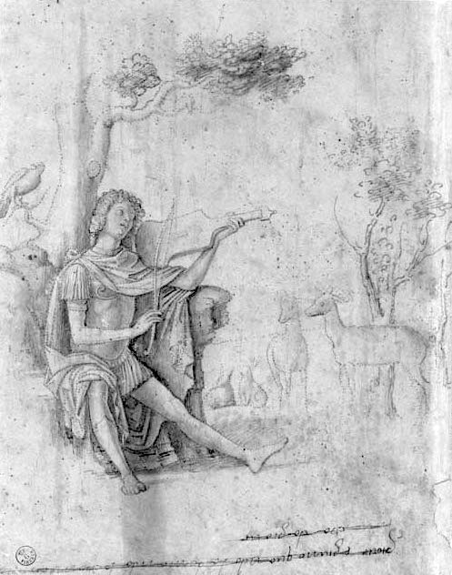

Malarskie krajobrazy Rilkego
Cima da Conegliano
Pomnika nie stawiajcie. Niech różana
gałązka kwitnie dlań w corocznej chwale.
Bo to Orfeusz jest…
Znalezioną w Sierre reprodukcję rysunku Cimy da Conegliano, przedstawiającą Orfeusza, najwyższego boga poezji, Baladine Klossowska zawiesiła nad biurkiem Rilkego w jego gabinecie w Muzot.
Giovanni Batista Cima da Conegliano „Orfeo”, Gabinetto Disegni e Stampe degli Uffizi, Florencja